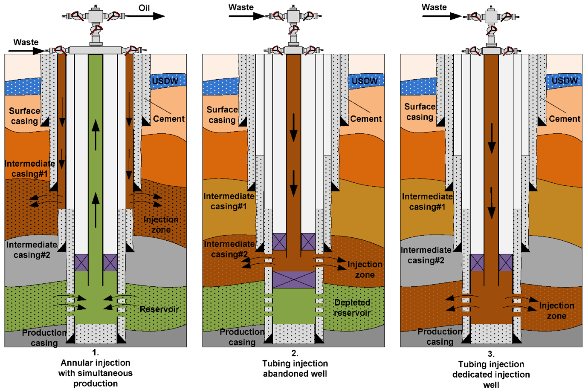

Injection Well
Introduction: An injection well is a type of well designed to inject fluids, such as water, wastewater, or CO₂, into the subsurface. It consists of a pipe or casing that extends from the surface into underground formations, enabling fluids to be pumped into the ground under pressure.
Key Purposes of Injection Wells:
- Oil and Gas Industry: Used for enhanced oil recovery (EOR) by injecting fluids to increase reservoir pressure and stimulate production.
- Wastewater Management: Safely disposes of treated wastewater and industrial waste deep underground.
- Carbon Sequestration: Stores captured CO₂ in geological formations to mitigate climate change.
How Injection Wells Work: These wells operate by using pressure to inject fluids into deep, porous rock layers. The fluids are pre-treated, injected through the wellhead, and monitored with pressure gauges to ensure safe operation.
- Fluid Preparation: Treated to meet quality specifications.
- Injection Process: Carefully pressurized to avoid fracturing rocks.
- Pressure Monitoring: Ensures environmental safety and structural integrity.
Types of Injection Wells (EPA Classification):
- Class I: Industrial and municipal waste disposal into deep formations.
- Class II: Oil and gas production wells including EOR, disposal, and storage.
- Class III: Solution mining for minerals like salt or uranium.
- Class IV: Shallow hazardous/radioactive waste wells (now banned except for remediation).
- Class V: Miscellaneous wells (stormwater, aquifer recharge, etc.).
- Class VI: CO₂ sequestration wells for long-term climate change mitigation.
Applications of Injection Wells:
- Waste Disposal: Prevents contamination of surface water and aquifers.
- Enhanced Oil Recovery (EOR): Increases oil production from mature fields by injecting water, steam, or CO₂.